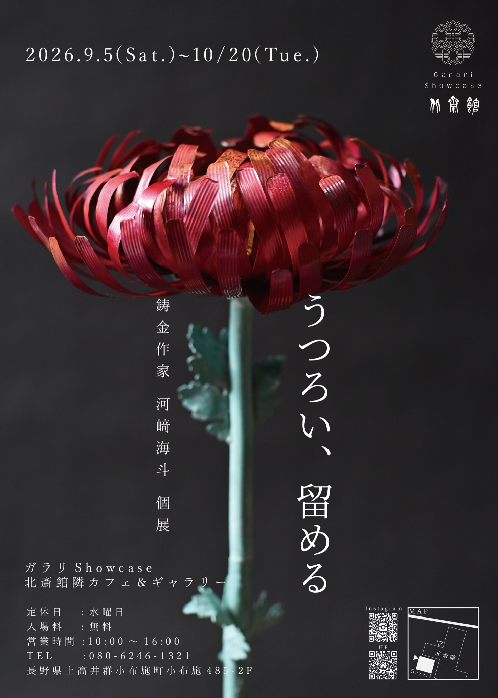
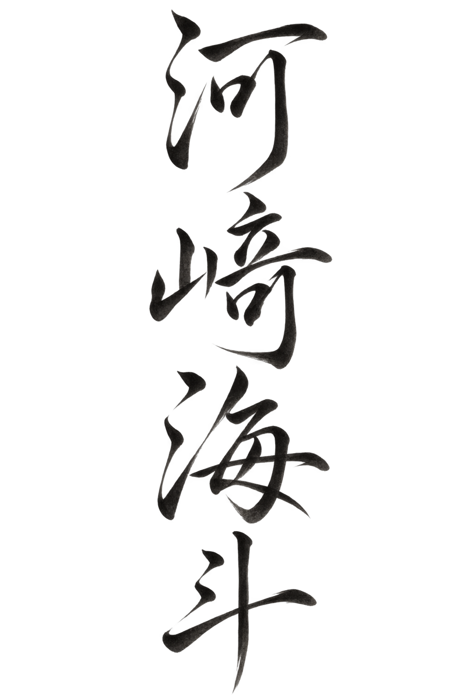
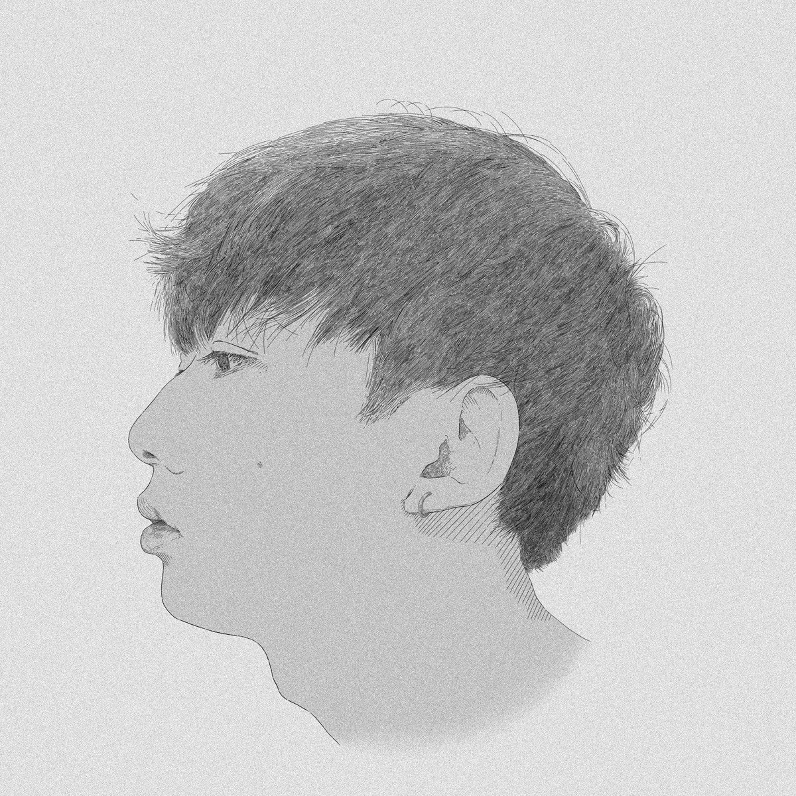

うつろい、留める
2026.9.5 — 10.20
ガラリShowcase
長野・小布施 ／ 北斎館隣
入場無料
北斎の《菊図》に描かれた菊「巴錦」を鋳金で表した新作「画狂ノ菊」を発表。



2026.9.5 — 10.20
ガラリShowcase
長野・小布施 ／ 北斎館隣
入場無料
北斎の《菊図》に描かれた菊「巴錦」を鋳金で表した新作「画狂ノ菊」を発表。
常設展示
東京・上野 ／ 朱色和金を展示
2026.11.27 — 11.29
ハイアット セントリック 金沢
GALLERY KOGURE ブース
2026.12.11 — 12.22
MEDEL GALLERY SHU HIBIYA
帝国ホテルプラザ1F
2027.3.20 — 4.18
呉市立美術館（広島・呉）
共同出品：寺本光希（竹）

金工作家・鋳金
2000年、広島県呉市生まれ。
2026年、東京藝術大学大学院美術研究科工芸専攻鋳金研究分野 修士課程修了。東京を拠点に制作。
金魚などを金属で鋳造し、アクリル樹脂の中に配置しています。金属の色は、研磨や加熱、酸素や温度の条件を調整して生み出します。
水や光、器、素材と、作品を見る人との関係を含めて制作する。その考え方を「工芸リアリズム」と呼んでいます。
制作の考え方を読む